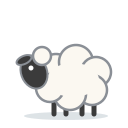
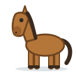

Unit 19
動物Animals
豬 馬 老虎 熊貓 馬騮 蛇 龍: counting them with 隻 or 條, what they can do with 會 (雀仔會飛, 魚會游水), and the twelve animals of the zodiac (我屬馬).
Learn
At the zoo
Farm animals, pets and zoo animals; 隻 or 條; 會 and 會唔會; 邊隻; and the zodiac: 你屬乜嘢呀？
GameZoo
Find the animal, count it with 隻 or 條, say whether it can fly or climb, and find your zodiac animal.

GameWrite It
Write 羊, 兔 and 虎 stroke by stroke with your finger: trace, then from memory, then 默書 from what you hear.
WritingWriting Sheet
Print a practice sheet: each character stroke by stroke in Hong Kong order, to trace and then write.

GameTone Detective
Hear animals and pick their tones. 馬 maa5, or 媽 maa1?
SpeakingSay It Back
Record yourself and compare your tones with a native speaker's pitch curve.